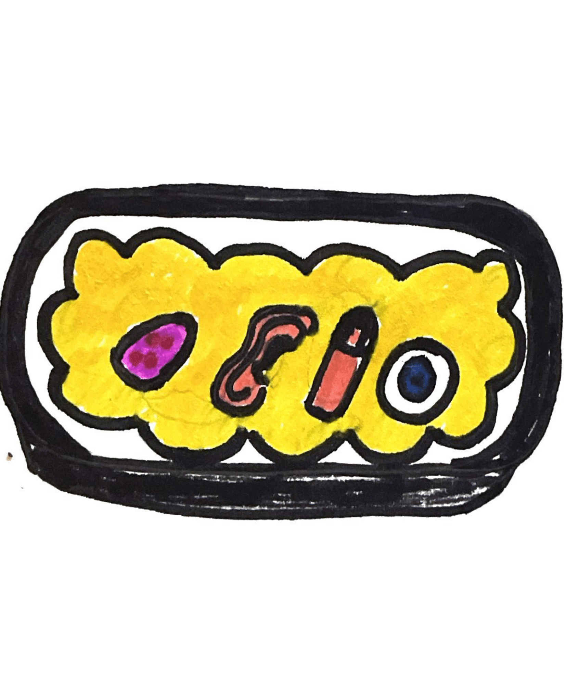
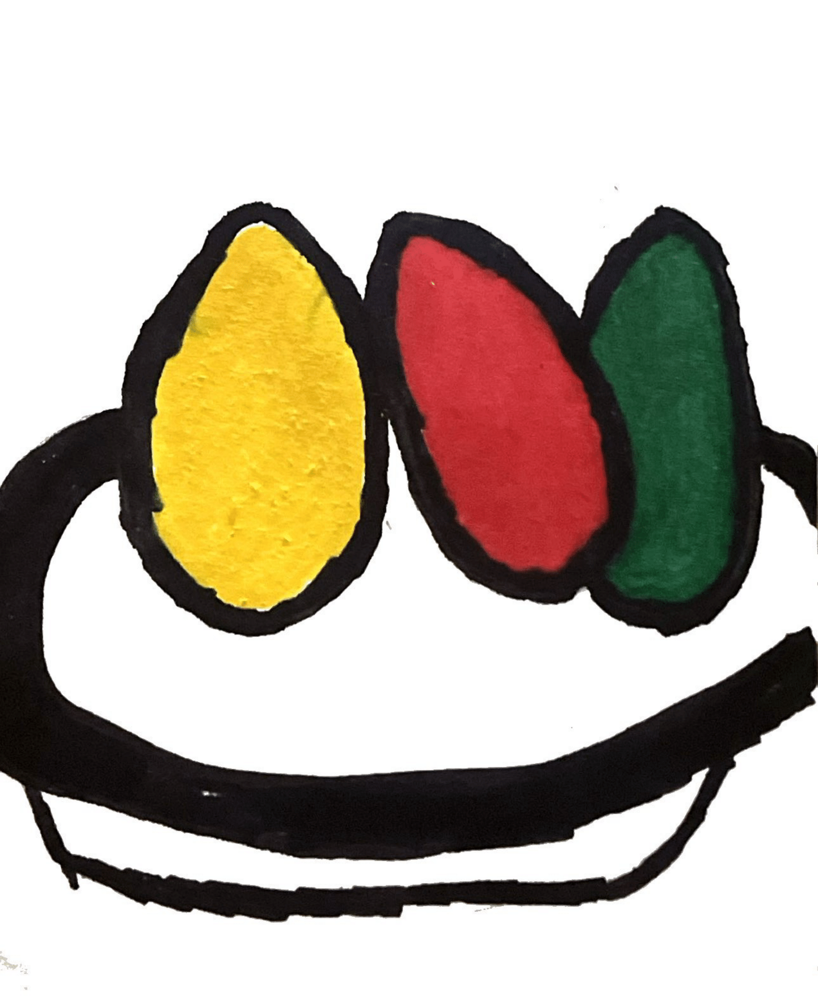
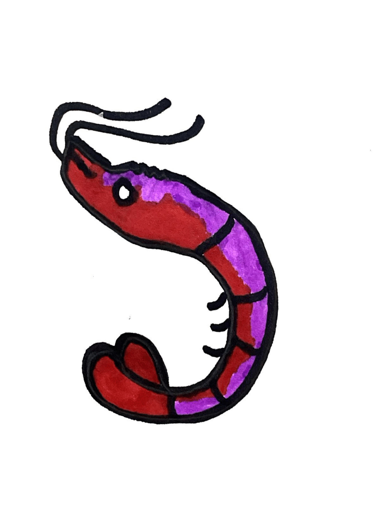

The Dining Dead: Appetizers
Sensory Smorgasborg

Sensory organs, including a tongue, finger, eye, and ear served atop a spongey thalamus to bring everything together.
Emotion Eggs

Hard boiled, randomly assorted eggs with fried amygdala inside to get that extra emotional flavor!
Shrimp Temporal

Grilled shrimp topped off with a melted temporal lobe drizzle.